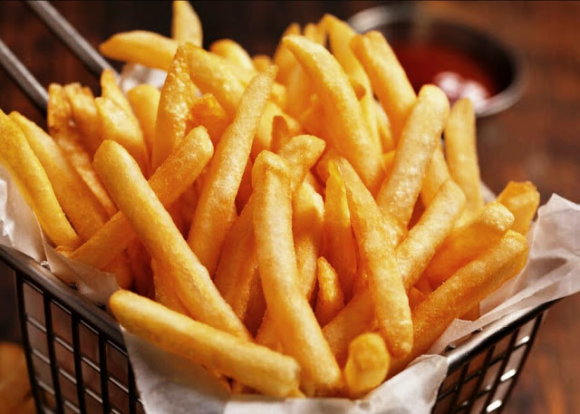

Patatas fritas
Recetas de patatas fritas caseras

Ingredientes
- 3 ó 4 patatas (300 g.)
- 4 dientes de ajo
- Aceite de Oliva
- Sal
Elaboración (Pasos)
- Calentar aceite en una sartén
- Añadir las patatas cortadas, la sal y los ajos
- Freir al gusto
- Servir en plato.